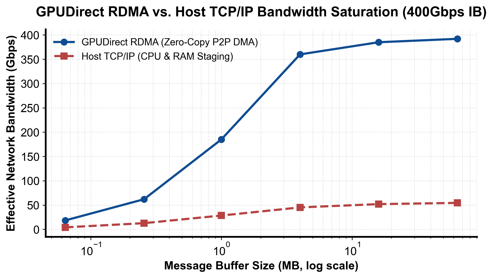

flowchart TD
Setup["初始化 InfiniBand 设备与上下文"] --> RegMR["注册内存区域 (ibv_reg_mr 锁定物理页)"]
RegMR --> CreateQP["创建发送/接收队列对 (Queue Pair: QP)"]
CreateQP --> Exchange["带外通信 (TCP) 交换 QP 元数据并进入 RTS 状态"]
Exchange --> PostSend["下发异步传输请求 (ibv_post_send / RDMA Write)"]
PostSend --> PollCQ["网卡硬件自主搬运并轮询完成队列 (ibv_poll_cq)"]
第 2 课：InfiniBand、RoCE、RDMA 与 GPUDirect 数据路径
参考答案版：包含完整代码实现与问答题深度参考解析。建议先独立完成练习题后再展开核对。
本课目标与完成标准
本课产出：计算考虑协议效率和 oversubscription 的消息时间，并解释零拷贝成立的完整条件。
通过要求：唯一代码填空题通过给定检查；Q1～Q3 都给出因果链；能指出一个正确性边界和一个性能/运营取舍；总分至少 8/10。
与既有六条主线的边界
runtime/lesson04 建模 collective；本课展开其下方网络：HCA/NIC、RDMA verbs、lossless fabric、拥塞与 GPU Direct。
前置：Linux/网络基础、runtime 补充线、train 分布式章节。本课只补 AI Infra 缺口，不重复已经完成的 kernel 或并行算法推导。
核心心智模型
核心操作与执行流程图解

图 2-1：GPUDirect RDMA 与传统 Host TCP/IP 网络吞吐与带宽饱和对比（基于 scientific-figure-making 绘制）
图 2-2：RDMA 队列对 (QP) 建立、内存注册与硬件自驱动传输流水线
1. 它是什么，解决什么问题
在百亿至万亿参数大模型分布式训练（如 70B/405B 参数 LLM）与高并发在线推理集群中，跨节点通信需要以毫秒乃至微秒级的频率在成百上千个 GPU 间实时同步百兆至千兆字节的激活值或梯度数据。
传统基于操作系统的标准 TCP/IP 网络协议栈在此场景下暴露出致命瓶颈（如图 2-1 所示）： 1. 多重数据拷贝与内存带宽挤占：传统路径下，GPU 显存数据必须先通过 PCIe 复制到 Host 内存（D2H），再由 CPU 拷贝到内核 Socket 缓冲区，最终经网卡 DMA 发送；在接收端经历对称的逆向流程。一次跨机传输涉及 4 次内存拷贝，吞吐严重受限于 Host 内存总线带宽。 2. CPU 中断与上下文切换风暴：每个网络数据包均需操作系统内核处理协议头校验、拥塞控制与软中断，导致 CPU 核心打满、发生严重的调度抖动与 CPU 缓存污染。 3. 通信延迟高且带宽难以饱和：端到端延迟通常在 \(20\sim 50\,\mu\text{s}\) 以上，对于中等大小的张量通信，物理链路带宽利用率往往不足 40%。
RDMA（Remote Direct Memory Access，远程直接内存访问）打破了上述瓶颈：它允许网卡适配器（HCA/NIC）绕过操作系统内核（Kernel Bypass），直接通过硬件 DMA 访问本端与远端的物理内存。
进一步地，GPUDirect RDMA（GDR）彻底消除了 Host 内存中转壁垒：借助 PCIe P2P 事务与 Linux DMA-BUF 机制，两台服务器的 RDMA 网卡可以直接对彼此的 GPU HBM 显存发起硬件级 DMA 读写，实现端到端物理显存直通的真零拷贝（Zero-Copy）。如图 2-1 所示，GDR 将端到端传输延迟压低至 \(1.5\sim 2.5\,\mu\text{s}\)，并能在张量体积达到兆字节级时迅速饱和 90% 以上的网络物理线速。
在物理承载方面，RDMA 主要通过两种织网架构实现： - InfiniBand（IB）：专为高性能计算设计的专用网络，硬件层面具备基于信用机制的严格链路流控（Credit-based Flow Control），天生具备零丢包的无损（Lossless）属性； - RoCEv2（RDMA over Converged Ethernet v2）：将 RDMA 封装在以太网 UDP/IP 报文之上，依托商业以太网交换机部署，依赖交换机的优先级流量控制（PFC）与显式拥塞通知（ECN）协同模拟无损网络环境。
2. 它如何工作
(1) RDMA 控制平面与数据平面的严格分离
RDMA 通信机制将控制链路（慢速路径）与数据搬运（极速路径）完全解耦，其核心生命周期如图 2-2 所示：
- 设备初始化与保护域构建（Setup & Protection Domain）：
用户进程调用ibv_open_device获取 HCA 上下文，并调用ibv_alloc_pd分配保护域（Protection Domain, PD），隔离不同租户的内存与队列资源。 - 显存物理页锁定与注册（Memory Registration:
ibv_reg_mr）：
为确保 DMA 安全，必须将目标 GPU 显存地址锁定（Pinning），防止其在传输期间被驱动换出或重分配。驱动生成物理地址散布列表（Scatter-Gather List）并下发给网卡片上 TLB，派发本地密钥（lkey）与远程访问密钥（rkey）。 - 队列对创建（Queue Pair: QP）：
调用ibv_create_qp创建发送队列（Send Queue, SQ）与接收队列（Receive Queue, RQ）。 - 带外元数据握手与状态迁移（Out-of-band Exchange & RTS）：
两端节点通过带外的标准 TCP 连接交换 QP 编号（QPN）、网络层标识（LID 或 GID）、目标显存虚拟地址（vaddr）与rkey。随后，驱动将 QP 状态机由RESET切换至INIT、RTR（Ready to Receive），最终置为RTS（Ready to Send）。 - 硬件自驱动无感传输（Fast Path:
ibv_post_send）：
发送端调用ibv_post_send提交一个带有远端rkey的 RDMA Write 工作请求（WR）。本地网卡直接通过 PCIe Switch 从 GPU 显存读取数据，打包送入网络织网。对端网卡收到报文后校验rkey，直接通过 PCIe 写入对端 GPU 显存。整个数据搬运过程完全由网卡硬件自主驱动，两端 CPU 与内核协议栈 0% 介入。 - 完成事件轮询与 CUDA Stream 同步（
ibv_poll_cq）：
传输完成后网卡向完成队列（Completion Queue, CQ）压入完成事件（CQE），应用程序通过非阻塞轮询ibv_poll_cq确认完成，并联动 CUDA Stream Event 解锁下游 GPU 计算。
(2) 有效网络带宽与传输耗时数学建模
在分布式训练中，单次网络消息传输的时延模型由固有延迟与有效带宽两部分决定： 设传输数据体量为 \(N\) 字节，物理链路标称带宽为 \(B_{\text{link}}\)（bit/s），网络协议开销与传输效率因子为 \(\eta\)（通常在 \(0.8\sim 0.9\) 之间，扣除以太网头、报文校验与微观排队损耗），网络超订比为 \(O\)（Oversubscription Ratio, \(O \ge 1.0\)），网络固有单向延迟为 \(t_{\text{lat}}\)：
\[\text{Effective Bandwidth } (B_{\text{eff}}) = \frac{B_{\text{link}}}{8} \times \frac{\eta}{O} \quad (\text{Bytes/s})\]
\[T_{\text{msg}} = t_{\text{lat}} + \frac{N}{B_{\text{eff}}}\]
当传输数据量较小时（如轻量级分布式锁或状态探针），\(t_{\text{lat}}\) 占据主导；而对于深度学习大张量通信，传输耗时几乎完全由有效带宽项 \(N / B_{\text{eff}}\) 决定。
3. 正确性条件与常见误区
- 误区一：网卡物理支持 RDMA 即可自动享受 GPUDirect RDMA
GPUDirect RDMA 的成立必须具备严苛的软硬件闭环条件：- 拓扑直通：GPU 与网卡必须处于同一个可进行 P2P 寻址的 PCIe 根复合体或外部 PCIe Switch 下，且主板 BIOS 必须禁用 PCIe ACS（Access Control Services），防止 P2P 事务被强制拦截上报 CPU；
- 跨设备驱动支持：操作系统必须加载并初始化
nvidia-peermem内核驱动或基于 Linux 内核现代 DMA-BUF 子系统，允许 RDMA 网卡驱动解析并映射由 NVIDIA 专有显存驱动分配的物理页； - 上层库适配：NCCL 必须显式探测并信任该拓扑路径（环境变量
NCCL_NET_GDR_LEVEL设置恰当），否则通信库会自动退回到以 Host 内存作为暂存区的中转模式（Host Staging）。
- 误区二：认为 RoCEv2 等同于原生 InfiniBand，忽略以太网拥塞丢包
原生 IB 在链路层具备严格基于信用的流控机制，下游硬件缓冲区满时上游物理层自动停发，天生具备物理无损特性；而 RoCEv2 是在传统“尽力而为（Best-Effort）”的有损以太网上运行。若交换机未正确配置基于优先级的流控 PFC（Priority-based Flow Control）与显式拥塞通知 ECN（Explicit Congestion Notification），突发通信（Incast）将直接造成交换机队列溢出丢包。RoCEv2 网卡一旦丢包将触发高昂的 Go-Back-N 硬件重传风暴，导致通信吞吐雪崩。
4. 性能与工程取舍
- 显存注册缓存（Memory Registration Cache）的收益与巨大风险：
ibv_reg_mr是一项高开销的系统调用，涉及物理显存页锁定、IOMMU 页表遍历与网卡片上 TLB 写入，耗时可达几十微秒。若每次集合通信前都重新注册显存，将彻底抹平 RDMA 的低延迟收益。因此 NCCL 和 UCX 均维护了显存注册缓存（MR Cache），复用已注册的显存物理段。
工程风险：若 PyTorch 底层通过cudaFree释放了某段显存，但通信库的 MR Cache 未能监听到该释放事件，当新的张量被分配到该复用的虚拟地址时，网卡若依据陈旧缓存执行 DMA，将直接向错误的内存地址写入数据，造成无法挽回的显存静默数据损坏（Silent Data Corruption）。 - 网络超订比（Oversubscription）与建网成本的博弈：
构建完全无阻塞（1:1 超订比）的全胖树（Fat-Tree）网络需要采购海量的 Spine 交换机与高昂的光模块。许多数据中心为了节省成本在汇聚层引入了 2:1 或 3:1 的超订比。在单机内或同 Pod 内训练时性能正常，但一旦进行跨 Pod 的大规模全局 All-to-All 集合通信，核心交换机发生严重的哈希碰撞与拥塞，通信耗时成倍膨胀。
具体演示
以 400 Gb/s（标称值 50 GB/s）高速网络链路为例： 若网络协议效率因子为 \(\eta = 0.8\)（考虑传输封装与网卡调度开销），网络接入层到核心层存在 2:1 的超订比（\(O = 2\)），则链路的有效带宽为： \[B_{\text{eff}} = \frac{400 \times 10^9}{8} \times \frac{0.8}{2} = 20 \times 10^9 \text{ B/s} = 20 \text{ GB/s}\]
传输一个 \(4\text{ GB}\)（\(4 \times 10^9\) 字节）的模型梯度张量，假设物理网络固定延迟为 \(5\,\mu\text{s}\)（\(5 \times 10^{-6}\text{ s}\)）： \[T_{\text{msg}} = 5 \times 10^{-6} + \frac{4 \times 10^9}{20 \times 10^9} = 0.000005 + 0.2 = 0.200005 \text{ 秒}\]
纯数据传输的带宽项（0.2 秒）占据绝对主导，超订比直接使传输时间翻倍。
请先独立复述“输入 → 状态变化 → 输出/指标”，再开始填空。
实践任务：唯一代码填空题
补齐网络消息时间；link_gbps 是 bit/s 标称值。
只能修改 TODO/______ 位置，不得删除断言或放宽通过条件。
Code
def message_time_s(nbytes, link_gbps, efficiency=1.0,
oversubscription=1.0, latency_s=0.0):
if nbytes < 0 or link_gbps <= 0 or not 0 < efficiency <= 1 or oversubscription < 1 or latency_s < 0:
raise ValueError("invalid network model")
effective_Bps = link_gbps * 1e9 / 8 * efficiency / oversubscription
# TODO：总时间 = 固定延迟 + 传输字节/有效带宽。
return ______
assert abs(message_time_s(4e9, 400, 0.8, 2, 5e-6) - 0.200005) < 1e-12检查方法
运行本单元格，所有断言必须通过；再补一个边界输入并解释预期。
Q1
RDMA、GPUDirect RDMA 和 NCCL 三者分别在哪一层？
你的答案：
Q2
RoCE 网络平均带宽正常但 p99 collective 抖动，优先查什么？
你的答案：
Q3
为什么内存注册缓存既提升性能又带来风险？
你的答案：
评分规则
- 代码 4 分：正常输入 2 分、边界输入 1 分、解释 1 分；
- Q1～Q3 各 2 分；
- 一票否决：混淆测量与推测、忽略租户/请求隔离、用平均值掩盖尾延迟、删除失败路径。